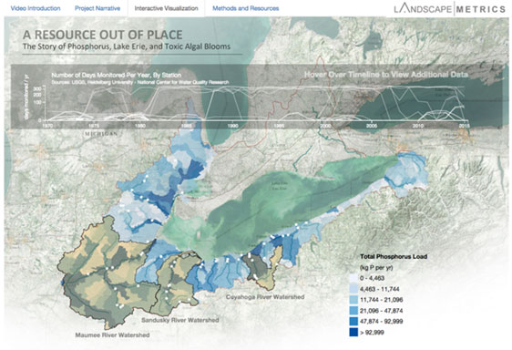
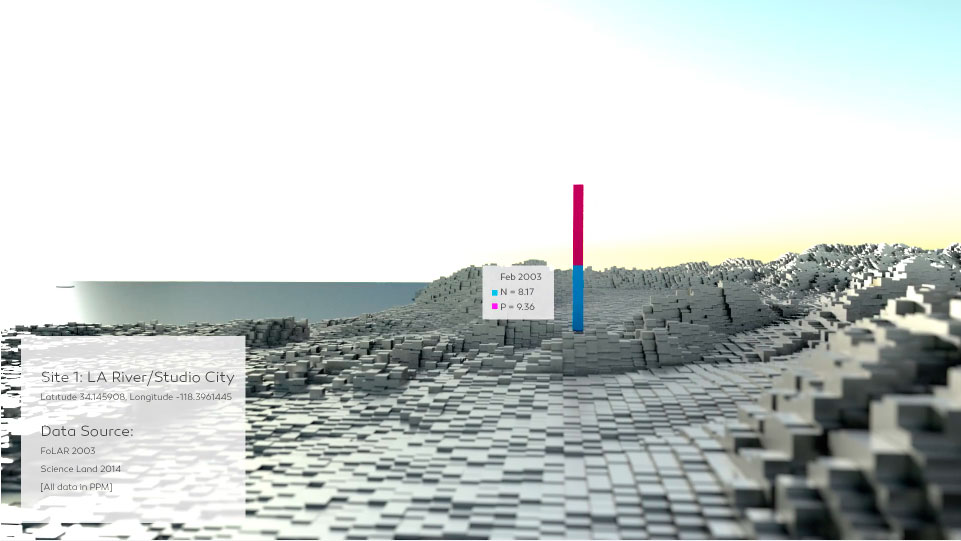
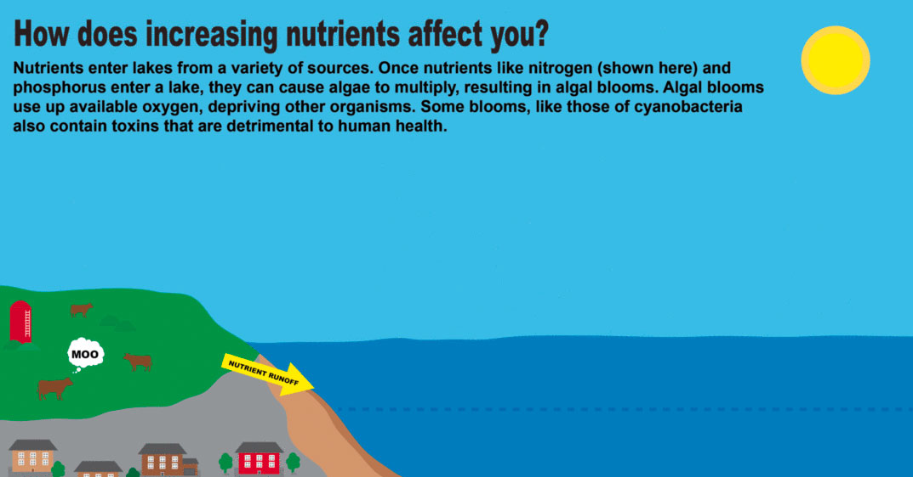
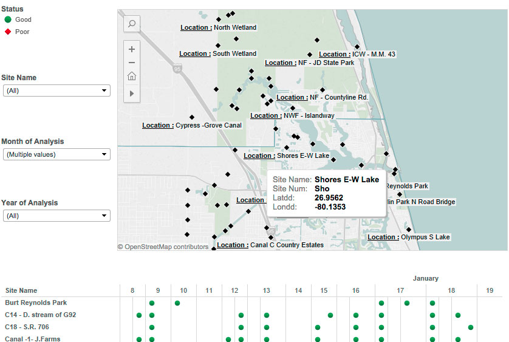
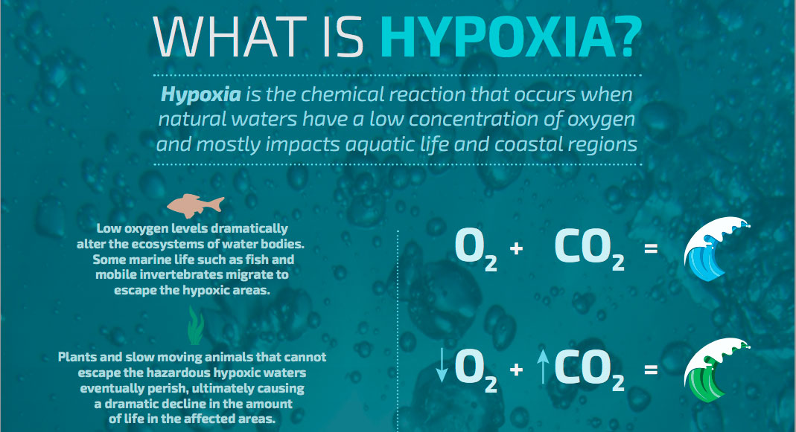
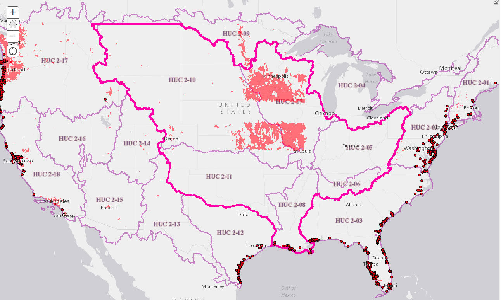
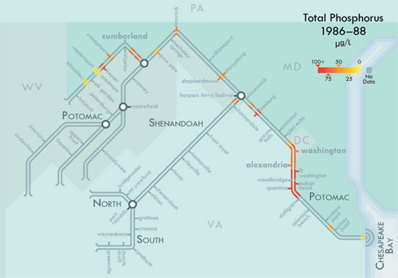

Nutrient pollution affects more than 100,000 miles of rivers and streams, close to 2.5 million acres of lakes, reservoirs, and ponds, and more than 800 square miles of bays and estuaries in the United States. The EPA, USGS, and Blue Legacy International challenged solvers to utilize open government data sources to create compelling, innovative, and comprehensible visualizations that inform individuals and communities on nutrient pollution and inspire them to take action to prevent algal blooms and hypoxia in local watersheds. Below, please find links for the winner and runners up of the 2015 Visualizing Nutrients Challenge.
First Prize Winner:
A Resource Out of Place: The Story of Phosphorus, Lake Erie, and Toxic Algal Blooms
Matthew Seibert, Benjamin Wellington, and Eric Roy, of Landscape Metrics
Runner Ups:
LA River
Catherine Griffiths, Isohale
How does increasing nutrients affect you?
Amanda Winegardner
Visualizing Nutrients
Chris Echezabal
The Silent Predator of the Deep Blue: Hypoxia
Kayla Brady, Sathya Ram, Michael Ruiz, Matthew Peters, and Thaumas Mathew, of Computer Aid, Inc.
VizNut48: Nutrient Pollution in the US Surface Waters and Management Actions
Kerem Gungor
Visualizing Water Pollution Data Using Beck-Style Flow Path Maps
Prof. Edward Aboufadel of the Department of Mathematics at Grand Valley State University and Daniel P. Huffman of somethingaboutmaps
